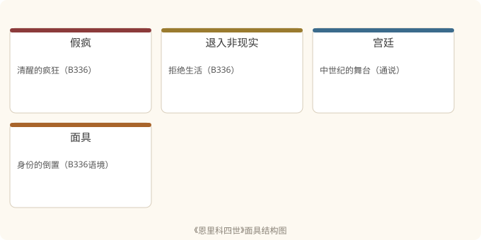

恩里科四世
一、基本信息
| 作者 | 路易吉·皮兰德娄 |
|---|---|
| 成书/出版 | 1922年（Britannica B336：Enrico IV (1922)） Luigi Pirandello — Encyclopaedia Britannica（百科全书） |
| 国别/地区 | 意大利 |
| 时代 | 近代 · 20世纪20年代 |
| 体裁 | 戏剧 |
| 语言 | 意大利语 |

《恩里科四世》面具结构图（主题·结构图）
二、创作背景
Britannica（B336）：Enrico IV——'the theme is madness, which lies just under the skin of ordinary life'（主题是疯狂，它就藏在日常生活的表皮之下）。
Britannica（B336）：主人公选择'retirement into unreality in preference to life'（宁愿退入非现实而不愿生活）。
Britannica（B336）：皮兰德娄——1934诺奖；'theatre within the theatre'的发明者。
三、内容脉络
（通说待核——B336未载剧情）假扮'恩里科四世'的疯狂者维持疯狂十二年后醒来。
（通说待核）'退入非现实'的选择：清醒者的疯狂辩护。
四、主要人物表
| 人物 | 身份 | 说明 |
|---|---|---|
| 恩里科四世 | 假疯者 | （B336 书名人物） |
| 玛蒂尔达 | 伯爵夫人 | （通说待核，B336未载） |
五、主题与艺术特点
- 疯狂与清醒的倒置（B336：madness...under the skin）。
- '退入非现实'的存在选择（B336）。
- 面具与身份（B336 作者论语系）。
六、影响与评论
- Britannica：'the theme is madness...'（B336）。
Luigi Pirandello — Encyclopaedia Britannica（百科全书） - Britannica：皮兰德娄1934诺奖（B336）。
Luigi Pirandello — Encyclopaedia Britannica（百科全书）
七、阅读建议
难点
- 疯狂与清醒的辩证。
- 中世纪扮演的舞台机制。
- 《恩里科四世》中译本（人民文学等——通说待核）。
- 意大利文原版。
皮兰德娄进阶；与《六个寻找剧作家的角色》对读。
八、待核实
- 剧情细节核对（通说）。
- 1922年首演细节待核。
- 玛蒂尔达人名待核。
本页主要来源
相关作品：六个寻找剧作家的角色一个、无、十万个雷雨
路易吉·皮兰德娄的其他收录作品：六个寻找剧作家的角色一个、无、十万个恩里科四世